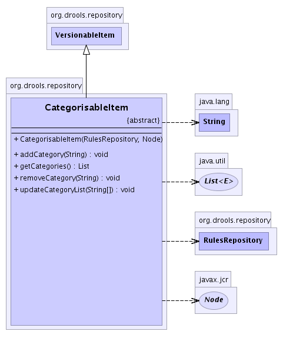

org.drools.repository
Class CategorisableItem
java.lang.Object
 org.drools.repository.Item
org.drools.repository.VersionableItem
org.drools.repository.CategorisableItem
org.drools.repository.Item
org.drools.repository.VersionableItem
org.drools.repository.CategorisableItem
- Direct Known Subclasses:
- AssetItem
public abstract class CategorisableItem
- extends VersionableItem
This contains logic for categorisable items
(not all versionably items are categorisable).
-
- 
| Fields inherited from class org.drools.repository.VersionableItem |
CATEGORY_PROPERTY_NAME, CHECKIN_COMMENT, CONTENT_PROPERTY_ARCHIVE_FLAG, COVERAGE_PROPERTY_NAME, CREATOR_PROPERTY_NAME, DEFAULT_CONTENT_FORMAT, DESCRIPTION_PROPERTY_NAME, FORMAT_PROPERTY_NAME, LAST_CONTRIBUTOR_PROPERTY_NAME, LAST_MODIFIED_PROPERTY_NAME, PUBLISHER_PROPERTY_NAME, RELATION_PROPERTY_NAME, RIGHTS_PROPERTY_NAME, SOURCE_PROPERTY_NAME, STATE_PROPERTY_NAME, SUBJECT_PROPERTY_NAME, TITLE_PROPERTY_NAME, TYPE_PROPERTY_NAME, VERSION_NUMBER_PROPERTY_NAME |
|
Method Summary |
void |
addCategory(java.lang.String tag)
Adds the specified tag to this object's node. |
java.util.List |
getCategories()
Gets a list of CategoryItem objects for this assets node. |
void |
removeCategory(java.lang.String tag)
Removes the specified tag from this object's rule node. |
void |
updateCategoryList(java.lang.String[] categories)
This method sets the categories in one hit, making the
ASSUMPTION that the categories were previously set up ! |
| Methods inherited from class org.drools.repository.VersionableItem |
archiveItem, checkin, checkIsUpdateable, checkout, getCheckinComment, getCoverage, getCreatedDate, getCreator, getDescription, getExternalRelation, getExternalSource, getFormat, getLastContributor, getLastModified, getLongProperty, getName, getPrecedingVersion, getPrecedingVersionNode, getPublisher, getRealContentFromVersion, getRights, getState, getStateDescription, getStringProperty, getSubject, getSucceedingVersion, getSucceedingVersionNode, getTitle, getType, getUUID, getVersionContentNode, getVersionNumber, getVersionSnapshotUUID, isArchived, isHistoricalVersion, sameState, updateCoverage, updateDescription, updateExternalRelation, updateExternalSource, updateFormat, updatePublisher, updateRights, updateState, updateState, updateStringProperty, updateSubject, updateTitle, updateType |
| Methods inherited from class java.lang.Object |
clone, finalize, getClass, notify, notifyAll, toString, wait, wait, wait |
CategorisableItem
public CategorisableItem(RulesRepository rulesRepository,
javax.jcr.Node node)
addCategory
public void addCategory(java.lang.String tag)
throws RulesRepositoryException
- Adds the specified tag to this object's node. Tags are stored as nodes in a tag area of
the repository. If the specified tag does not already have a corresponding node, a node is
created for it.
Please note that this is mainly intended for rule related assets, not packages
(although it could be used).
- Throws:
RulesRepositoryException- Parameters:
tag - the tag to add to the rule. rules can have multiple tags
updateCategoryList
public void updateCategoryList(java.lang.String[] categories)
- This method sets the categories in one hit, making the
ASSUMPTION that the categories were previously set up !
(via CategoryItem of course !).
getCategories
public java.util.List getCategories()
throws RulesRepositoryException
- Gets a list of CategoryItem objects for this assets node.
- Throws:
RulesRepositoryException
- Returns:
- a list of TagItem objects for each tag on the rule. If there are no tags, an empty list.
removeCategory
public void removeCategory(java.lang.String tag)
throws RulesRepositoryException
- Removes the specified tag from this object's rule node.
- Throws:
RulesRepositoryException- Parameters:
tag - the tag to remove from the rule